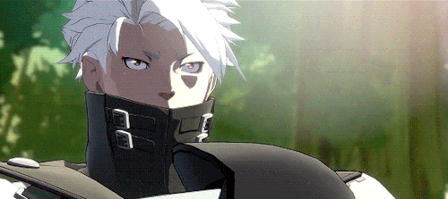

Born in America during the crusades, Chipp too would lose his parents, as many others did. A struggled youth, Chipp would turn to drugs and become both an addict and a dealer for the mafia. Eventually, he was to be disposed of due to his heavy drug abuse but was saved by his eventual Master Tsuyoshi who led him into a clean life being taught the ways of the ninja. Eventually, he would be killed by the Assassin's Guild but made Chipp Promise to live a better life from then on.
For a few years, he lived full of rage at his master’s death, but eventually, he realized he was doing no good just being angry, so he decided to make a change by becoming president of an underdeveloped foreign nation. He would go on to be of great aid when Ramlethal declared war on humanity. Following the attack of Ramlethal and the Universal Will, he continued to help stop Happy Chaos' plan.
